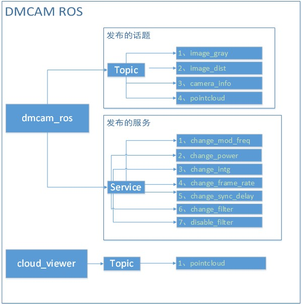

Smarttof SDK ROS Userguide¶
DMCAM ROS 概述¶
DMCAM ROS是基于ROS系统对DMCAM API的封装，具有如下所列功能：
- 深度数据和灰度数据采集与显示
- 动态修改参数
- 点云数据采集与显示
DMCAM ROS基于ROS系统，创建dmcam_ros和cloud_viewer两个包，dmcam_ros包用来采集与显示深度、灰度数据和动态修改参数，cloud_viewer包是一个示例，用来显示点云数据，组织架构图如下图所示：
DMCAM ROS主要使用流程¶
DMCAM ROS 使用前准备¶
DMCAM ROS在使用前需要先安装Ubuntu系统和ROS系统，详细安装参阅ros安装说明
测试深度数据和灰度数据¶
开启ROS环境:
roscore&
进入ros所在文件夹初始化环境变量:
source ./devel/setup.bash
运行launch文件:
roslaunch dmcam_ros start.launch
显示深度图命令:
rosrun image_view image_view image:=/smarttof/image_dist
深度图像显示如下：

显示灰度图命令:
rosrun image_view image_view image:=/smarttof/image_gray

动态修改参数¶
开启一个滤波功能，如DMCAM_FILTER_ID_AUTO_INTG:
rosservice call /smarttof/change_filter "filter_id:
'DMCAM_FILTER_ID_AUTO_INTG'
filter_value: 0"
关闭一个滤波功能，如DMCAM_FILTER_ID_AUTO_INTG:
rosservice call /smarttof/disable_filter “filter_id: ‘DMCAM_FILTER_ID_AUTO_INTG’”
cloud viewer样例说明¶
cloud viewer 简介¶
cloud_viewer是一个简单的使用dmcam_ros来显示点云数据的样例，这个样例简单的实现了怎么从dmcam_ros发布的话题pointcloud中获取点云数据并显示出来。
显示点云数据¶
开启ROS环境:
roscore&
进入ros所在文件夹初始化环境变量:
source ./devel/setup.sh
运行launch文件:
roslaunch cloud_viewer start.launch
显示点云图像

通过鼠标中间的滑轮和鼠标左键调整点云显示图像，最终效果如图

API接口说说明¶
dmcam ros发布的话题¶
/smarttof/image_dist¶
| 使用命令 | rosrun image_view image_view image:=/smarttof/image_dist |
| 功能描述 | 从image_dist发布的话题中获取深度数据 |
/smarttof/image_gray¶
| 使用命令 | rosrun image_view image_view image:=/smarttof/image_gray |
| 功能描述 | 从image_gray发布的话题中获取灰度数据 |
/smarttof/camera_info¶
| 使用命令 | rostopic echo /smarttof/camera_info |
| 功能描述 | 从camera_info发布的话题中打印摄像头的信息 |
/smarttof/pointcloud¶
| 使用命令 | rviz |
| 功能描述 | 从rviz中显示通过pointcloud发布的话题中的点云数据 |
dmcam ros发布的服务¶
/smarttof/change_power¶
| 使用命令 | rosservice call /smarttof/change_power “power_value: 0” |
| 功能描述 | 动态修改PARAM_ILLUM_POWER的值， |
| 函数参数 | 保留 |
/smarttof/change_intg¶
| 使用命令 | rosservice call /smarttof/change_intg “intg_value: 0” |
| 功能描述 | 动态修改PARAM_INTG_TIME的值，PARAM_INTG_TIME为积分时间 |
| 函数参数 | “intg_value: 0”中积分时间的范围为0-1500 |
/smarttof/change_mode_freq¶
| 使用命令 | rosservice call /smarttof/ change_mod_freq “mod_freq_value: 0” |
| 功能描述 | 动态修改PARAM_MOD_FREQ的值，PARAM_MOD_FREQ为时钟频率 |
| 函数参数 | “mod_freq_value:0”中目前固定为12MHz |
/smarttof/change_frame_rate¶
| 使用命令 | rosservice call /smarttof/ change_frame_rate “frame_rate_value: 0” |
| 功能描述 | 动态修改PARAM_FRAME_RATE的值，PARAM_FRAME_RATE为帧率 |
| 函数参数 | “frame_rate_value:0”中的范围为10-30 |
/smarttof/change_sync_delay¶
| 使用命令 | rosservice call /smarttof/ change_sync_delay “sync_delay_value: 0” |
| 功能描述 | 动态修改PARAM_SYNC_DELAY的值，PARAM_SYNC_DELAY为同步延时时间 |
| 函数参数 | “sync_delay_value:0”，0为自动，1-10为指定范围 |
/smarttof/change_filter¶
| 使用命令 |
|
| 功能描述 | 打开filter_id中指定id值的滤波功能 |
| 函数参数 |
|
/smarttof/disable_filter¶
| 使用命令 | rosservice call /smarttof/disable_filter “filter_id: ‘’” |
| 功能描述 | 打开filter_id中指定id值的滤波功能 |
| 函数参数 |
|
SDK ROS系统安装及环境配置¶
本文档主要介绍ROS系统安装、环境配置、测试以及基于ROS系统中模组的使用方法。
ROS系统安装准备工作¶
安装前准备工作¶
安装过程中大概会下载500MB左右的软件包，为了避免下载软件包速度过慢，推荐使用网易源或者其他国内源进行下载安装（替换为网易源请参考http://mirrors.163.com/.help/ubuntu.html）。
以下安装方法以安装ROS Kinetic版本 为例，其他版本安装方法类似。
Ubuntu系统下快速安装（推荐使用）¶
打开命令行终端，进入ros所在文件夹，运行命令:
sudo chmod 755 install_ros.sh ./install_ros.sh
出现如下图4所示选择安装版本，手动输入版本名称后按回车开始安装，Ubuntu14.04推荐使用indigo，Ubuntu16.04推荐使用kinetic。

Ubuntu系统下命令行安装¶
添加 sources.list，设置你的电脑可以从 packages.ros.org 接收软件:
sudo sh -c 'echo "deb http://packages.ros.org/ros/ubuntu $(lsb_release -sc) main" > /etc/apt/sources.list.d/ros-latest.list'
添加 keys
sudo apt-key adv –keyserver hkp://ha.pool.sks-keyservers.net:80 –recv-key 421C365BD9FF1F717815A3895523BAEEB01FA116 sudo apt-get update
在ROS中，有很多不同的库和工具。我们提供了四种默认的配置来帮助你开始。你也可以单独安装ROS包。
桌面完整版: (推荐) : 包含ROS、rqt、rviz、机器人通用库、2D/3D 模拟器、导航以及2D/3D感知:
sudo apt-get install ros-kinetic-desktop-full
桌面版安装: 包含ROS、rqt、rviz以及通用机器人函数库:
sudo apt-get install ros-kinetic-desktop
基础版安装: (简版) 包含ROS核心软件包、构建工具以及通信相关的程序库，无GUI工具:
sudo apt-get install ros-kinetic-ros-base
单个软件包安装: 你也可以安装某个指定的ROS软件包（使用软件包名称替换掉下面的PACKAGE:
sudo apt-get install ros-kinetic-PACKAGE 例如:: sudo apt-get install ros-kinetic-slam-gmapping
初始化 rosdep
在开始使用ROS之前你还需要初始化rosdep。rosdep可以方便在你需要编译某些源码的时候为其安装一些系统依赖，同时也是某些ROS核心功能组件所必需用到的工具:
sudo rosdep init rosdep update
ROS环境配置及DMCAM ROS编译¶
ROS环境配置¶
每次使用ROS系统前需要初始化安装版本的环境变量，以Kinetic为例，Kinetic默认安装在/opt/ros/kinetic/目录下，该环境变量配置文件位置/opt/ros/kinetic/setup.bash,每次使用前需要初始化ros环境，命令如下:
source /opt/ros/kinetic/setup.bash
为了简化配置环境变量的过程，可以选择把环境变量的配置放在~/.bashrc文件中，这样每次打开一个新终端的时候，ROS的环境变量会自动配置好:
echo "source /opt/ros/kinetic/setup.bash" >> ~/.bashrc
5DMCAM ROS系统编译¶
进入ros所在目录，通过ls命令查看目录中文件如下:
install_ros.sh Makefile src
使用catkin_make(Makefile中实现了catkin_make使用的步骤，也可以使用make命令来编译):
source /opt/ros/kinetic/setup.bash(未在bashrc中设置初始化环境需要这一步) catkin_make
编译完成后会生成devel和build目录，通过ls命令查看编译生成的文件:
build devel install_ros.sh Makefile src
初始化devel中的环境变量:
source devel/setup.bash
RVIZ 显示图像、点云数据¶
rviz简介¶
rviz是ros自带的一个图形化工具，可以方便的对ros的程序进行图形化操作。其使用也是比较简单。 整体界面如下图所示 ：

界面主要分为左侧的显示设置区域，中间的大的显示区域和右侧的视角设置区域。最上面是和导航相关的几个工具。最下面是ros状态相关的一些数据的显示。
rviz使用前准备¶
开启ROS环境:
Roscore&
进入ros所在文件夹初始化环境变量:
source ./devel/setup.bash
运行launch文件:
roslaunch dmcam_ros start.launch
rviz显示深度图像¶
打开一个终端，运行rviz:
rviz选中add，By topic中选中image_dist下的Image，最后确认添加，如下图所示：

显示效果如下图所示：

rviz显示点云图像¶
打开一个终端，运行rviz:
rviz选中add，byTopic中选中pointcloud下的PointCloud2，最后确认添加.

在rviz左上角的displays区域，修改GlobalOptions下的变量FixedFrame值为dmcam_ros，点云显示如下图